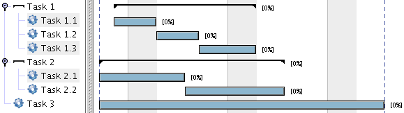

GanttProject - Task creation
First, you create some tasks by using the New Task button or directly from the Tasks menu choose New Task
The tasks appear on the tree on the left pane; you can directly change their name here.
Next, you can organize tasks by indenting
them by groups or categories. So you could have a hierarchy like this:

Tasks can also be re-organized by using the up and down functions. These functions move the selected task up or
down in its hierarchy reordering it.